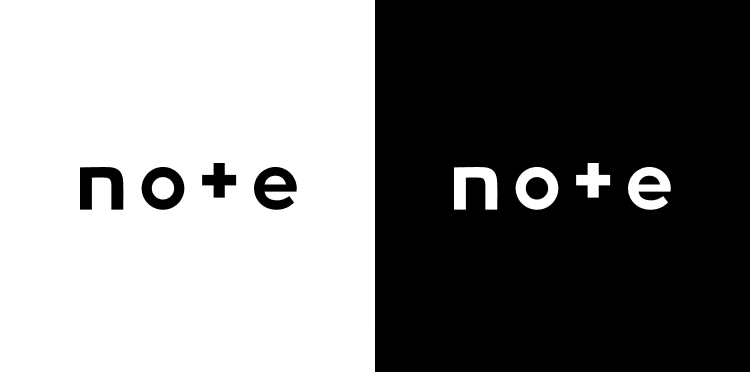
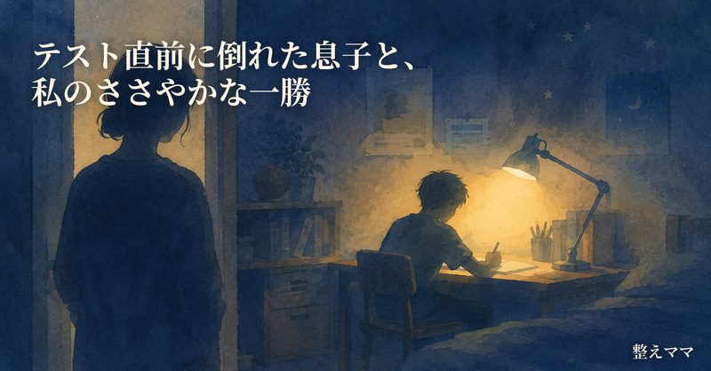

言葉の工房
子育ての一コマを、noteの記事に変えるツール。
書けない理由を、ひとつずつAIに引き受けてもらう。
ここから、ひとつずつ見ていきます。
作ったもの
「言葉の工房」。子育ての出来事を、noteの記事に変えるツールです。
裏側では、画面を作る仕組み「Streamlit」と、文章を書くAI「Anthropic API（Claude）」が動いています。
その日にあったことをそのまま書いたメモ（ジャーナル）を貼るところから、noteに渡すところまで、6つのステップでつながっています。

公開ボタンを押す最後の一手は、必ず本人の操作。ツールが用意するのはそこまで。

解決する面倒・課題
発達に特性のある子育てをしていると、記事にできそうな出来事は毎日起きる。
それでも書けないのには、2つの障壁がある。
出来事は起きるのに、その場の対応で精神的・時間的な余裕がない。書こうと思ったときには、もう別の出来事が上書きされている。
書こうとしても、「これは個人情報になるのでは」「表現がきつくなりすぎないか」という迷いが手を止める。
この2つの障壁を、技術で軽くすることが目的。
作りたいと思った理由
きっかけは、4月のスクール課題で作った別のツール「家族の毎日レポート」。単身赴任中の夫に子どもの様子を届けるため、専門的な視点を組み込んでAIに"通訳"してもらう仕組みだった。読んだ瞬間、頭の中がすっと静かになった。
このAIの"通訳"の力を、家族向けのレポートだけでなく、もっと開かれた場所での発信にも生かせるはず。そう思ったのが「言葉の工房」の出発点だった。
子育ての大変さは、渦中にいるときはただ苦しいだけに感じる。でも、それを言葉にして向き合ってみると、親自身の気づきや成長にもちゃんとつながっていく。身近な人との関係を丁寧に育てることが、社会への貢献の出発点になると信じている。
「言葉の工房」は、そうやって日々の出来事を"言葉にする"ための、私自身の小さな伴走者になっている。
工夫した点・苦戦した点
AIに文章を書かせるとき、指示を細かく重ねるより、「お手本になる記事」を1本まるごと見せる方が、ずっと精度が上がる。実際に高評価だった記事の冒頭を、生成のたびにAIへのお手本として渡す仕組みにした（コード上はSTYLE_REFERENCEという名前で管理）。
AIが速くしてくれるのは、候補出し・下書き作りまで。何を記事にするか・どのタイトルにするか・どのサムネイルにするか・note.comの公開ボタンを押すか——判断と最後の一手は、すべて意図的に人間の手元に残した。ここが「AIの力だけど、わたしらしさが宿る場所」。
プライバシーチェックは、AIへの"お願い"ではなく生成のたびに必ず動くプログラム処理。ただし「これなら公開して大丈夫」という最終判断まで自動でブロックするのは危険だと考え、チェック結果を見せたうえで、最後に必ず自分の目で確認してから保存する設計にした。
日々のジャーナルは、自動整理ツールを通すと、実際の気持ちとズレた感情ラベルが付くことがある（例：本人の実感は「心を無にして嵐が過ぎるのを待つ」だったのに、自動ラベルは「恐怖に近い緊張感」となっていた）。AIの自動解釈をそのまま信じると、記事の感情の芯がズレてしまう。そこで、本人が「今回はこう感じた」と書き添えるメモ（AUTHOR_NOTE）を、自動ラベルより必ず優先して読み込む仕組みをプロンプトに組み込んだ。実行のたびに書き換えて使う、いわば"本人の解釈権"を確保するための工夫。
実際にあった出来事をそのままAIに書かせると、個人情報だけでなく文章の温度感まで失われてしまう。そこで5つのルールをプロンプト化した。①感情の起伏・リズムをそのまま保つ、②固有名詞や識別できる情報だけを別の言葉に置き換える、③視点（カメラ）は常に本人の内面に置く、④背景情報を補って文脈を厚くする、⑤自分自身の至らなさも正直に描く。単なる匿名化ではなく、「本人らしさ」を保ったまま安全に書き換えるための技法。
「出来事→気づき→感謝」という同じ骨格を毎回繰り返すと、記事を重ねるほど読者に構造が見え透いて飽きられてしまう。そこで記事に2つの「型」を用意した。型A（旗艦記事）は1つの出来事を通して大きな変容を描き切る、重めで低頻度の記事。型B（つれづれ）は日々の小さな出来事をそのまま書き留め、結論めいた一文を置かずに情景や台詞で「ふわっと」終える、軽めで高頻度の記事。量産しても単調にならないよう、素材選定の段階でどちらの型に向くかも判定するようにしている。
日々の細かい作業は標準モデルで十分。でも、文章のトーンを詰める・記事のクオリティを検証するといった判断が難しい局面では、より高性能なモデルへの切り替えが必要になる。実際、記事生成に使うモデルはOpus・Fable5・Sonnet5の3つを同じ素材で4回チューニング・比較して選んだ（最終的にFable5を採用）。「今はどっちを使うべきか」を都度判断すること自体が、思っていたより悩ましい作業だった。
当初はコーディングツール（Claude Code）だけで完結させるつもりだった。でも実際に進めるうちに、方向性を決めたり文章のトーンを判断したりする「考える」作業と、コードを書く「手を動かす」作業を同じ場所でやると効率が悪いことに気づいた。途中から、Claude Codeとチャット（Cowork）の役割分担を言語化して整理することになった。最初から正解が分かっていたわけではなく、実際に手を動かしながら見つけていった。
AIが作業中にタスクリストを表示したり、選択肢を提示してきたりする場面で、最初は「これは何のため？」「自分は何をすればいい？」が分からず、都度聞きながら理解していく必要があった。AIと一緒に作る、ということ自体に慣れるための時間が、地味だけど確かに必要だった。
これまでCursorで使っていた図解作成・プレゼン作成などのスキルを、卒業制作を機にClaude Code中心の作業に一本化することにした。ただ、スキルが実際にどこに置かれているか、本当に有効化されているかを一つひとつ確認し、必要なものだけを移す作業は、地味だけど時間のかかる作業だった。